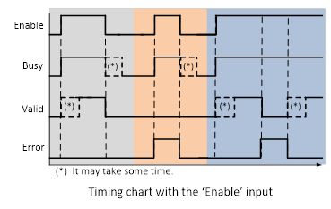
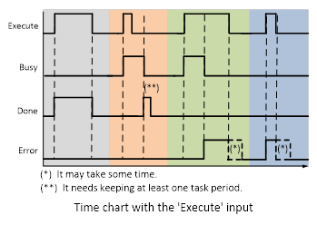

Variables that start instruction execution or indicate the execution status are defined as common rules for the instructions. There are two input variables that start instruction execution: Execute and Enable. The output variables that indicate the execution status of an instruction include Busy, Done/Valid/Enabled, CommandAborted and Error.
The timing for the FBs with Enable input in Trio PLCopen Motion Control FBs conforms to the following chart.

Enable is level sensitive for FBs with Enable input.
The grey part is the normal usage. The Valid output may need some time to output after Enable becomes TRUE. The Busy output may take some time to reset after the failing of the Enable input.
The orange part is showing the timing of invalid input status. The Error output becomes TRUE when it finds invalid inputs and stays TRUE until Enable becomes FALSE.
The blue part shows the timing with an error occurring and disappearing whilst the Enable input stays TRUE.
From the above timing chart, we can see that:
The above time diagram does not apply for FBs that can affect the PLCopen state diagram, e.g. MC_Power.
The Execute input for Function Blocks described here always triggers on rising edge. The reason for this is that with edge triggered Execute new input values may be commanded during execution from previous command. The advantage of this method is a precise management of the instant when a motion command is performed.
The timing for the FB with Execute input in Trio PLCopen Motion Control Function Blocks conforms to the following chart.

The grey part shows the Done output becomes TRUE at the rising edge of Execute input.
The orange part shows the behaviour when Execute triggers and changes to FALSE within a very short period. The instruction finishes without error and the Done output stays at least one period cycle after it has finished and Execute has become FALSE.
The green part shows an error occurs while it is running.
The blue part shows that there an error occurs when the instruction is triggered.
From the above timing chart, we can see that: